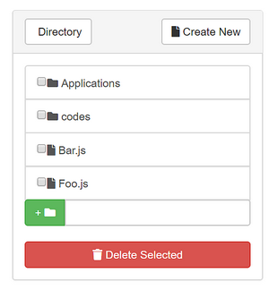
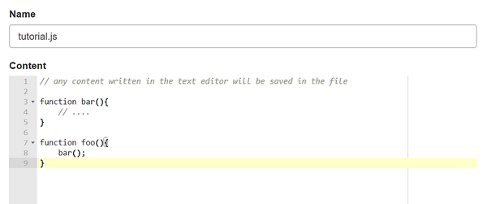

A Guide to Using the Dashboard
I. Navigating the Dashboard
The navigation bar is located to the left of every page. Clicking on any link from the navigation bar will redirect you to a new view.
Figure 1: Navigation bar
Currently, users can navigate to the following views:
II. Dashboard Views
1. Home
The
Home viewprovides detailed information about live devices ( runningcode engineinstances) on the system, along with the programs these devices may be executing.
1.1 List of Devices
Running devices can be seen from the Devices panel, along with the device's status.
Figure 2: List of devices
Clicking on a specific device will give users the option to view details about the device on the bottom or top pane located to the right of the page.
Figure 3: Selecting a device to view on the pane
1.2 Detailed Device Pane
Users can view information for a specific device on the top or bottom Device Pane. This information includes output to console, graphs of the device's resource usage, and general information about the device.
Figure 4: Detailed device pane
1.2.1 Running Code on a Device
To run code on a device, have the device selected in the Device Pane. Then, choose the code you want to execute on the device before clicking run. You may only select code in the \codes\ directory at this time.
Figure 5: Running code on a device
Once the code successfully launches on the device, you can 
kill, 
pause, or 
migrate the process.
Figure 6: Additional options for running code
2. Schedule
The
Schedule viewprovides a time-based overview of events in the system.
2.1 The Time-Based Schedule View
The graph shown on the page provides users a time-based view of the events in the system. Users can minimize and maximize the graph, click on a specific point in time on the graph, or navigate forward or backwards in time.
Figure 7: A graph of events in the system

2.2 Events
The events displayed on the graph can be further broken down into separate categories: Scheduler, Engines, Programs.
Note that the scheduler must be live for their events to be shown on the separate tabs.
To see the phases of the scheduler, select the Scheduler tab
Figure 8a: Scheduling phases
To see device events, select the Engines tab
Figure 8b: Device events
To see program events, select the Programs tab
Figure 8c: Program events

3. Applications
The
Applications viewallows users to define and save their ownThingsJS applications
3.1 Creating a New Application
A form is provided on this page to create a new application. The steps for creating an application are as follows:
Provide a name for your application
Browse through the filesystem and select components (code) to include in the application
Figure 9: Selecting components for an application
For each component, specify the number of instances of that component, and the component requirements (e.g. required memory)
Figure 10: Component requirements
Click when you are finished
3.2 Existing Applications
Users can view existing applications on a dropdown list at the bottom of the page under Existing Applications.
Clicking on an application in the list will expand the panel with information about the application
Figure 11: Details for an existing application
4. Files
The
Files viewprovides an interface to theThingsJS filesystem.
4.1 Filesystem Navigation
Users can navigate the filesystem using the Filesystem Navigator, which can be found to the right of the page. Files are indicated by a file icon, while directories are indicated by a folder icon.

Figure 12: Filesystem navigator
Clicking on a file will bring the file up on the text editor to the left of the page. Clicking on a directory will bring the user inside the folder.
4.1.1 Current Directory
Users can view the current directory at the top of the page. Any files or folders created will be made to the current directory.
Figure 13: The current directory
4.2 Creating a New Directory
To create a new directory, type the directory name in the input field of the Filesystem Navigator. Then, click the green button beside the input field when complete.
Figure 14: Creating a new folder

4.3 Creating and Saving Files
To create a new file, click the Create New button located to the top-right of the page. This will clear any existing content in the text-editor. Afterwards,
Provide a name for your file
Fill the content of your file by writing inside the text editor

Figure 15: Writing a file
When complete, click the
savebutton located at the bottom of the pageFigure 16: Saving a file
Your new file will be made visible in the Filesystem navigator once it has been successfully saved.
4.4 Deleting Files and Folders
Delete files and folders by selecting them through the Filesystem navigator. When complete, click the Delete selected button. They will disappear from the navigator once successfully deleted.
Figure 17: Deleting files and folders